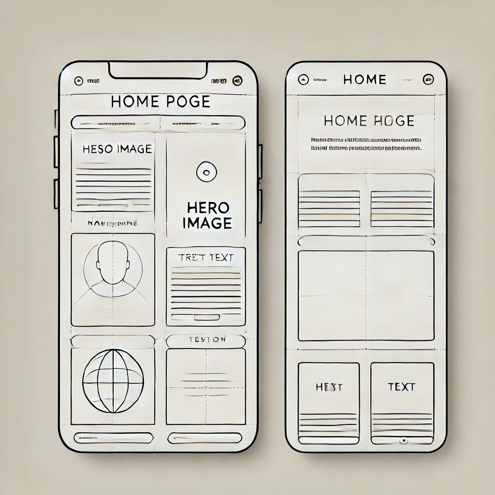
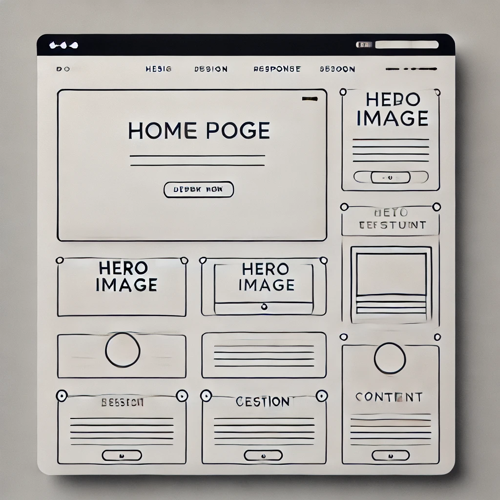

Site Name: TechForAll - A website dedicated to making technology accessible to everyone, particularly beginners and underserved communities. The name was chosen to reflect the mission of inclusivity in tech education and resources.
The purpose of TechForAll is to provide easy-to-understand tutorials, articles, and resources in programming, cybersecurity, and hardware reviews. The target audience includes beginners, hobbyists, and tech enthusiasts who are looking to gain practical tech knowledge in an engaging and simple way. The site will also host a membership sign-up form to build a community of learners.
Primary Color: #1976d2 (Used for headings, buttons, and accents)
Secondary Color: #f9f9f9 (Used for background and general body content)
Font Family: Arial, sans-serif (Used for headings, paragraphs, and all general text content)
The wireframes below represent the basic structure of the home page layout for both mobile and desktop views:
 